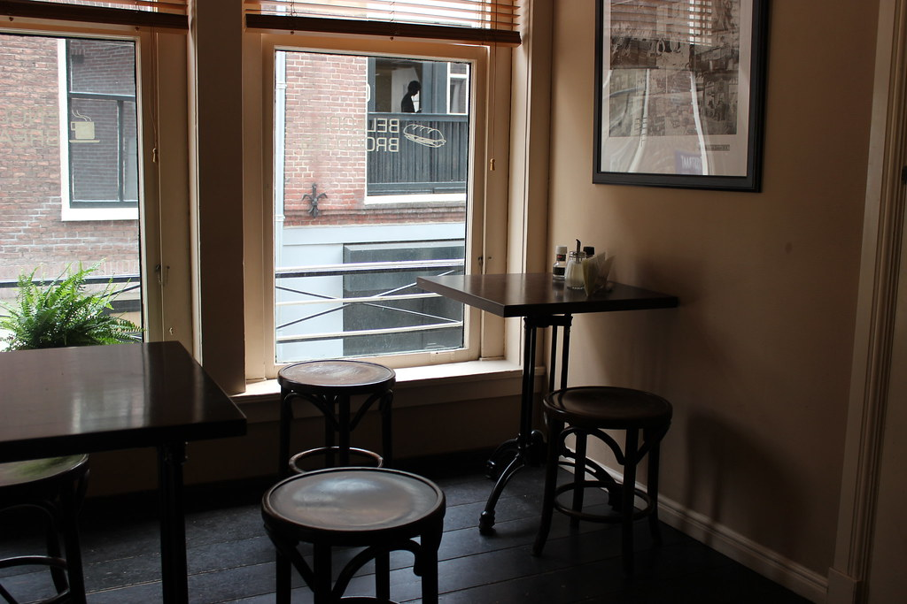
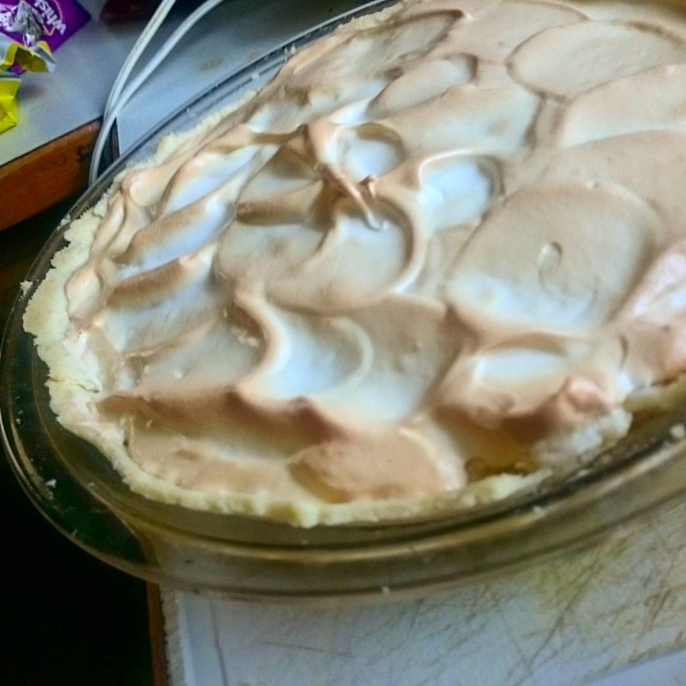

名もなきパフェに、会いにいく。
月替わりでテーマが変わる、予約制の一期一会パフェ。
住宅地にひそむ、小さなギャラリー
千葉県船橋市東船橋、東船橋駅から徒歩10分ほどの住宅地に、CHILL KITCHEN BASEはあります。目印の少ない通りに忽然と現れる佇まいは、初めて訪れる人を驚かせるほど。
ワンオペで切り盛りされる店内はコンパクトながら、一杯ごと、一皿ごとに丁寧な接客が光ります。ここは、カフェという言葉だけでは収まりきらない、小さな展示室のような場所です。
★4.1 Google口コミ(28件) この評価を見る →
ANONYMOUS ― 名もなきパフェ
月替わりでテーマが変わり、当日まで何が登場するか分からない看板パフェ「ANONYMOUS」。Instagramで予約開始の時刻が告知されると、あっという間に予約が埋まってしまうほどの人気です。
しまなみレモン、せとか、不知火、土佐文旦、金柑――グラスの底まで柑橘をふんだんに使い、「層」という言葉では説明しきれない、アシンメトリーな配色と構成で仕立てられます。飴細工やメレンゲ細工による季節の装飾が添えられることもあり、テーマごとにまったく違う表情を見せてくれます。
過去には、しまなみレモンを主役にしたレモンメレンゲパイのテーマや、クリスマスシーズンには飴細工のスノードームをあしらったテーマも登場しました。次はどんな一皿に出会えるか――それもまたANONYMOUSの楽しみ方のひとつです。

お客様の声
グラスを回すたびに赤、緑、オレンジ、レモン色と表情を変える一杯。アシンメトリーな配色と配置に、思わず目を奪われたという声をいただいています。
メニューを読むだけで遊園地に来たようなワクワク感を味わえる、一癖ある素材の数々。月替わりのテーマを心待ちにしているというお客様の声も届いています。
住宅地の中に急に現れる、アットホームな佇まい。ワンオペながら丁寧な接客が心地よかったという口コミも寄せられています。